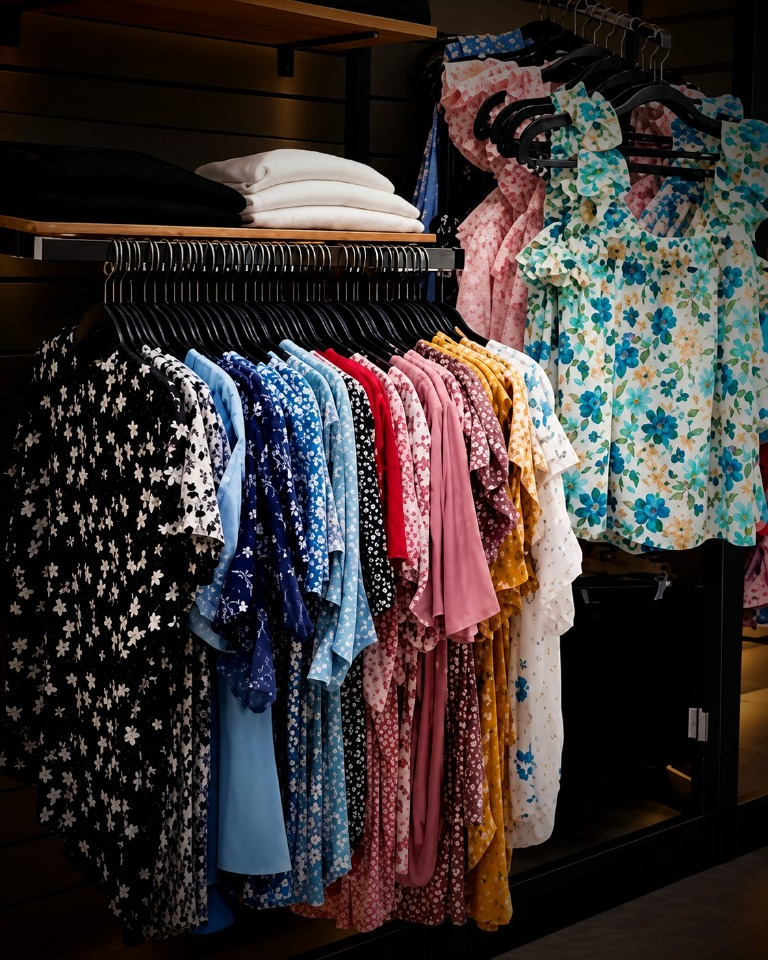
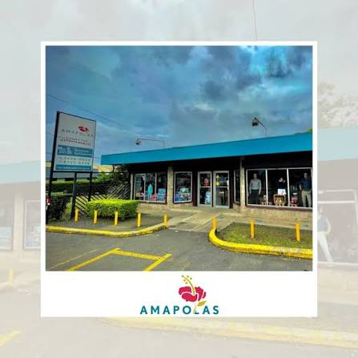

Las cosas de todos los días,
y esos detalles que alegran.
Desde 1987 en La Guácima.
Un lugar para encontrar
un poquito de todo.
Somos una tienda familiar de La Guácima. Desde hace más de 30 años compartimos con la comunidad ropa, regalos, para toda la familia.
Pasá a ver lo que tenemosBuscá por categoría
Productos destacados

Desde una bodega
de adobe, en 1987.
Así comenzó Tienda Las Amapolas: en una bodega de adobe y con las puertas abiertas para la gente de La Guácima. Con los años hemos crecido junto a la comunidad, sin perder el trato cercano y familiar que nos acompaña desde el principio.
Gracias por hacernos parte de tantas historias. Aquí te esperamos.
“Me encanta entrar a un negocio y poder encontrar todo lo que necesito y éste es el caso ; muy buena atención , buenos precios.”
“Hay mucha variedad y todo bonito. Encontré lindos zapatos y ropa de niño. La atención muy buena. Recomendada , Tienda y bazar Amapolas .”
“Bien surtido, super amables, los mejores empaques de regalo, todo de librería, ropa, calzado, regalos, recomendado si vives en esta zona”